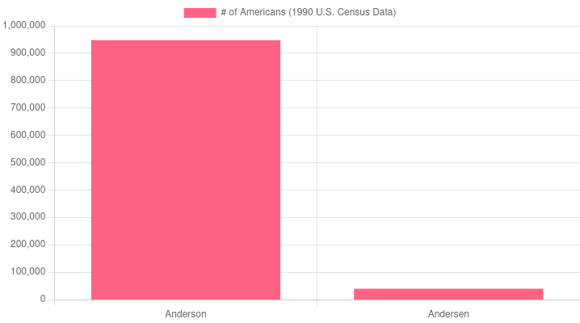
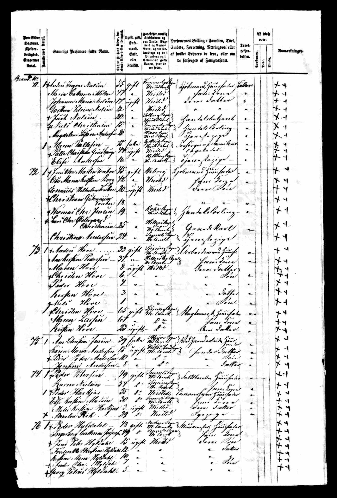
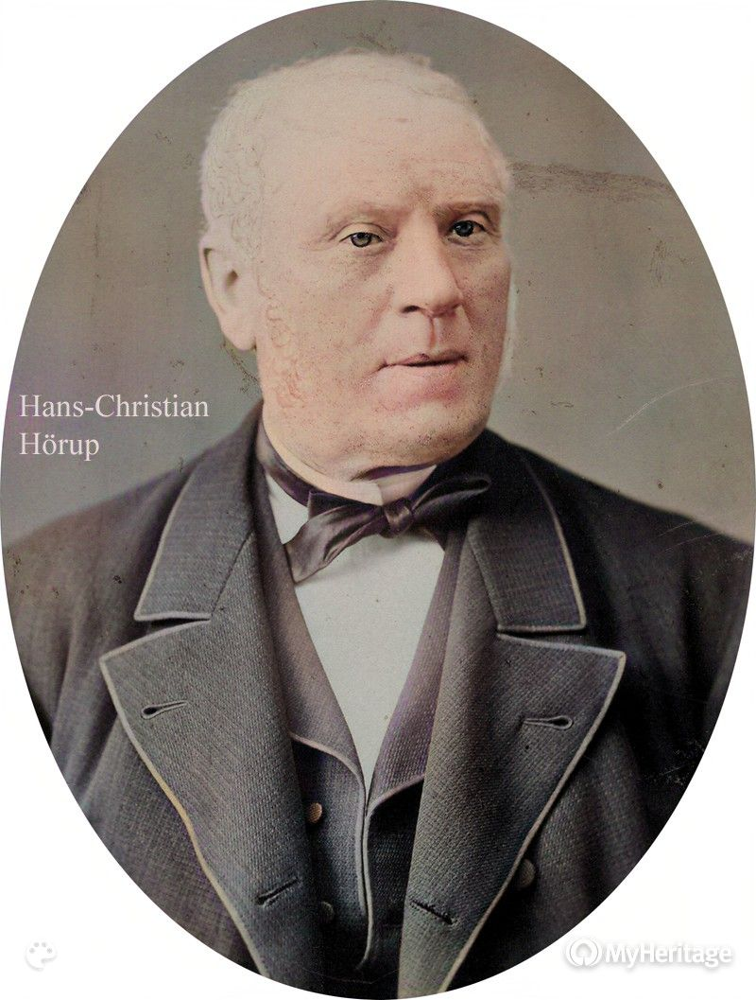
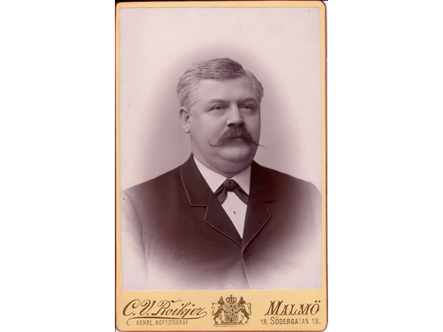

"Brye?" There's something that barely qualifies as a paragraph at the end explaining that. No real story there. "Hove?" That is a rabbit hole. Prepare for a mini-rant on the daily inconvenience of having a pretty common but slightly different surname, and for an unsolicited lesson on 19th century Scandinavian naming customs.
There was quite a bit of debate on my name between my parents, but since infancy I have legally been Brian Peter Andersen. Andersen as it's my father's name, Peter as it's a common family name, and Brian after a SUNY Stony Brook philosophy professor that blew my dad's mind in the '80s. Oh, and because my mother never met a Brian she hated.
That last name is "Andersen," not "Anderson." It is one letter off of the 15th most common surname in the United States. That sounds rather inconsequential, but... presents some rather unique issues.

There are a lot more Andersons in the United States than Andersens
Many of my old email addresses include my surname. Say "andersen@xyz.com" as an example. It does not help that I have poor handwriting, but as you may be able to guess, a lot of my mail goes to "anderson@xyz.com." Thankfully for me, he happened to be a nice British man who realized what kept happening and habitually forwarded me my emails, but especially when I got older and those emails could contain private things like financial or medical information, that type of error really wasn't acceptable.
I've had other emails with my last name and in those cases also registered the "anderson" equivalent, setting up message forwarding. I started writing capital Es when physically writing my email on a form. Even then, I'd estimate 70% of the time I wrote an email on a form, it would go to the wrong email.
Pretty much any time my name is being searched in a database, it is going to take the person searching for it two tries. Be it at a hotel, doctor's office, even my university. I first would spell it out.
"Brian Andersen, Brian with an I, A-N-D-E"
This is about where the person would stop listening to me. Not out of rudeness or inattentiveness, but because it's Anderson! Duh. If you've ever worked a front desk job, you've probably written or searched "Anderson" innumerable times. Even if not, you certainly know how to spell it.
The solution I still use to this day is to not begin spelling it, but to just say "and the second to last letter is an E, not an O." But that is a total mouthful, and even then around half the time they get it wrong.
One of my hobbies is genealogy. Since 8th grade, I've put a lot of time into researching my family history. For that reason, I have a lot of information on how my surname came about previously unknown to my relatives, and ended up finding a "solution" of sorts.
Andersen in my case is Danish, literally "Son of Anders." It's what is known as a "frozen patronym," in a lot of societies across the world before surnames were standardized distinctions would be made between people with the same first name by referring to their father. Especially in Europe, however, frozen patronyms have been frozen for hundreds of years, sometimes dating as far back as the Middle Ages.
Denmark however was rather late when it came to standardizing surnames. The first ordinance mandating hereditary surnames was passed in 1828, but it was very slow to be adopted in rural areas.
My patrilineal (father's father's father's...) ancestors originated in the farmlands around Thisted, Denmark. For that reason, I'm in the rather unusual position of actually being able to identify the Anders in Andersen.
His name was Anders Hove Christensen. That middle name looks a bit familiar. He was born 200 years ago in 1822, is labeled in census records as a "workman," and died in 1878. That means the namesake of my surname lived to see the end of the American Civil War, the construction of the first transcontinental railroad, and the invention of the telephone.

Anders & Family in the 1855 Danish census, marked #73. 4-year-old Peder Hove is my great-great-great grandfather & immigrant ancestor.
You may note that the above record does indeed refer to their surnames as Hove. Other records (especially church records) however include both Hove and Andersen on the record. Peder Christian Hove Andersen is listed on most Chicago records as Christian Andersen, altering his name in a way consistent with other immigrants of the era and completely dropping the "Hove."
TL;DR: I don't know.
Well, I at least have a good idea. It is most likely what is referred to in Scandinavian countries as a "farm name." These names are probably the closest the lower class had in this era to modern family names, as they referred to the farmstead the person was living on. That also means however that these names did not necessarily stick in a family. If one moved off the farmstead, for example, they'd drop the farmstead name. Likewise, if a man married a woman and moved onto her family's farm, he'd adopt her farm name. This may be the reason Christian Andersen dropped the "Hove" from his name when he emigrated to the United States, although by that point many families simply adopted the farm name permanently.
According to my research, the Hove name has been with this family since at least 1742, when my oldest known paternal ancestor Anders Andersen Hove died, the only record I've been able to find on him. Based off his age at death he was born around 1676 and therefore it is completely possible that the name was in the family even longer, but as far as the paper trail is concerned that is as far back as Hove goes.
To date I have been unable to locate records of a farmstead named "Hove" in Denmark, however several exist in Norway.
There is a catch to all this history: Hove is not the only hereditary name along my paternal line. Horup is the maiden name of Christian Andersen's wife Emma, and surprisingly enough it survived in America. My Chicago-born great-great-grandfather was Peter Horup Andersen, and he spent much of his childhood in Malmo, Sweden with his uncle Gottlieb Emil Horup. In fact, he was sent to Sweden as an infant and did not return until several years after his father Christian Andersen had hung himself, meaning it is exceedingly likely he never met his father.
The reason I did not choose this name are mostly circumstantial. I did not know Horup was his middle name or that he was sent to Sweden until after I had decided on Hove. Additionally, I have living distant cousins in the United States and Sweden that use this last name. I am not sure if I knew all that if I'd have chosen Horup, but I see no reason to change it now.
The etymology for this one is simpler than the other, simply refers to an ancestral town in Denmark.

Hans-Christian Horup, my great-great-great-great-grandfather

Gottlieb Emil Horup, my great-great-great-great-granduncle and the man who raised my great-great grandfather
As you can see, there were two main reasons I picked Hove.
When I set out to create an alias, I did not want to give the impression it was somehow a rejection of my family history. I was raised by a single mother and although my father and I had contact and infrequent visits, I never had a strong relationship with that side of my family.
One of the things that stunned me most about my research is just how much tragedy there is along my paternal line. Christian Andersen's butcher shop failed, and he hung himself in 1890, his son Peter who probably never met him returned to the U.S. as a teenager, promptly joined (and possibly deserted) several branches of the military before being discharged for unspecified disability and dying in 1910 at 29 years old. His son my great-grandfather also died young of unspecified disease.
Every generation from my great-great uncle to my uncle had a child die at an extremely young age.
There are no heirlooms or photos of these Andersens, but they somehow persevered, and I am a result of their perseverance.
Hove is short and easy to spell. My legal surname is not. That is the problem I set out to solve. I think I did alright for myself solving my initial issue, history lesson aside.
Ehh. I mean, my emails all go through fine now (besides my college email), but the front desk dynamic is yet to be solved. I don't know. I think I'm young enough where I have a lot of time to think that over. If I ever did, I doubt I'd change my first and middle name, just my last name. On that topic...
Not much of a story there. I wanted a nickname. People called be Bri a lot. I thought Bri looked weird spelt like that. Therefore, Brye.